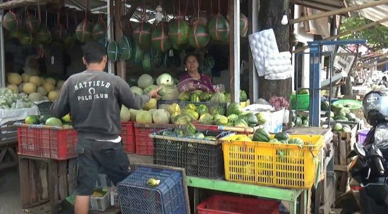

Puasa Ramadan, Pedagang Buah Blewah di Jember Raup Untung
Sumber = https://faktualnews.co/2019/05/12/puasa-ramadan-pedagang-buah-blewah-di-jember-raup-untung/140061/
JEMBER - Kenikmatan saat berbuka puasa, dirasakan saat menikmati takjil dengan minuman segar. Pada Bulan Ramadan tahun ini, pedagang buah garbis atau akrab disebut blewah meraup untung banyak. Pasalnya buah ini menjadi favorit masyarakat, sebagai pelepas dahaga setelah selama 12 jam menjalankan ibadah puasa.
Hal itu tampak terlihat di tempat penjual buah Pasar Tradisional Tanjung, Kecamatan Kaliwates, Kabupaten Jember, Jawa Timur. Pada pedagang buah blewah tersebut banyak didatangi pembeli dan menurut pengakuan salah seorang pedagang buah Sunar menyampaikan, buah tersebut saat Ramadan memang banyak diburu pembeli.
“Saat puasa gini, banyak yang membeli mas. Karena rasanya segar dan cocok untuk diminum saat berbuka puasa,” kata Sunar saat dikonfirmasi wartawan, Minggu (12/5/2019).
Bahkan karena banyakya peminat, kata Sunar, sejak pagi hingga sore hari, hampir setiap hari pembeli datang ke kios buahnya untuk membeli buah tersebut. “Kalau katanya pembeli yang pernah saya tanyai, kenapa memilih buah blewah. Enak dan segar, dan pas untuk berbuka. Makanya hampir setiap hari membeli,” katanya.
“Per kilogramnya di jual Rp 10 ribu. Biasanya per hari bisa laku minimal 10 buah. Jadi bisa dapat Rp 100 ribu per hari, masih kotor itu. Tapi bisa lebih dari itu,” tandas Sunar.
Terlebih lagi jika dikombinasikan dengan cincau hitam dan es, serta sirup. “Wah cocok banget, makanya buah ini banyak diburu pembeli,” sambungnya. Lebih jauh Sunar menyampaikan, buah lain yang menjadi buruan pembeli adalah semangka, melon, dan apel, yang memang menjadi kombinasi untuk membuat es buah.
Sementara itu, salah satu pembeli buah blewah Hari Lutfi menyampaikan, ada alasan tersendiri dirinya dan keluarga memilih buah blewah tersebut untuk suguhan berbuka puasa. “Selain buahnya yang segar. Juga ada manfaat lain, yakni untuk kesehatan,” kata bapak dua anak ini.
Berbuka puasa dengan menikmati es buah blewah, katanya, juga membuat suhu badan kembali normal juga perut menjadi dingin dan segar. “Blewah juga memiliki kandungan yang sehat untuk tubuh, untuk melindungi kesehatan mata, memperkuat sistem kekebalan tubuh, baik untuk kulit, baik untuk kesehatan jantung, dan juga baik untuk penderita diabetes,” ungkapnya.